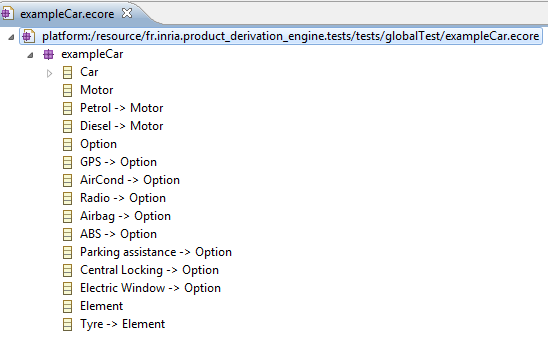

This chapter present a very quick of use of Product Derivation Engine. For more information please refer to the sample wink video and the sample wink video of the Feature Diagram Editor.
We want to derive the following base model which represents a car (this example is available in the Eclipse examples, go to File->New->Example-> Product Derivation Sample -> Product Derivation Test :

We have ever created a feature model for this base model through the Feature Diagram Editor tool :

We want to select a car with GPS, Radio, Electric Window and a diesel motor.